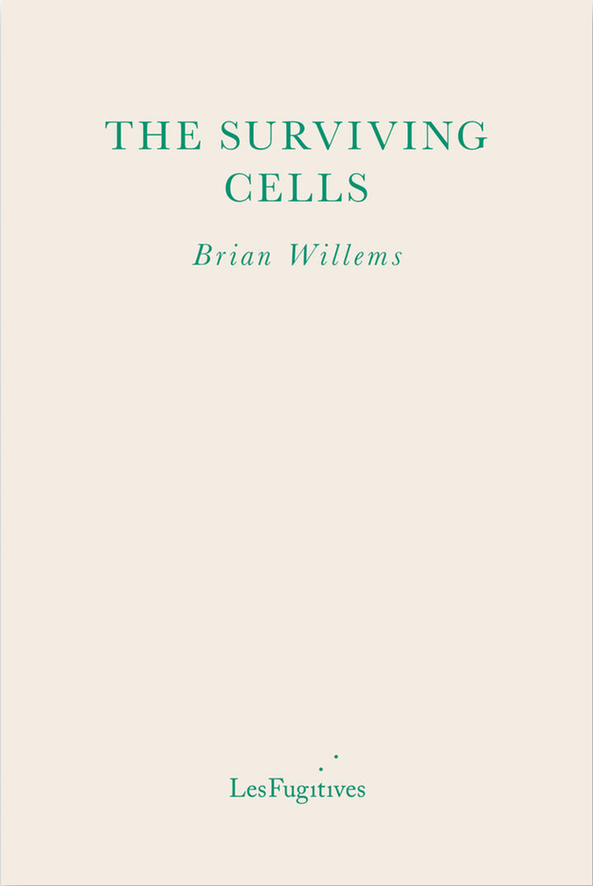

The Surviving Cells is a novel forthcoming September 2026 from Les Fugitives. Now available for pre-order.
This page features a series of short blog entries related to the novel
Jump to:
Feb 12, 2026

Present-day Minneapolis. Dr Ana Jovanovic, oncologist, goes against the advice of her hospital's tumour board and schedules her patient Jonathan for exploratory surgery.
When a tragic event sends the doctor’s life into a tailspin, she takes a sudden sabbatical.
Now sharply aware of her own mortality, the doctor is confronted with decisions about quality of life and quality of death.
One enduring non-fatal image from the Minneapolis protests taking place after the increased ICE raids and murder of Renée Good and Alex Pretti is the owner of DreamHaven books, Greg Ketter, standing on a snowy Twin City street, the smoke of smoke bombs around him, yelling "I'm 70 years old, and fucking angry!"
This is an image of anger, resistance, and hope, but, as a Minneapolis native who has lived in Europe for the last 30 years, it is also an image of distance and longing. DreamHaven is a book and comic store focusing on the fantastic. I know it, and have visited it, and even though I've written academic books on science fiction, I was not its biggest customer. I did buy my first issues of Adrian Tomine's comic Optic Nerve there, I think just getting it just based on the cover. I remember browsing its small used book section and not finding anything I wanted among the Pierce Anthony and Stephen Donaldson.
When that video of Ketter yelling came out, my brother wrote me and said, "He's yelled at me in the store, and made some good recommendations, the perfect combination for an indie bookstore owner," and, I have to admit, after that, when I sent someone else that video, I wrote, that Ketter had yelled at "both my brother and I," although it was a lie: he never yelled at me, something I clearly feel bad about.
I was born in Minneapolis, and then my family moved out to the sub-suburbs (Victoria) when I was 15. That was the perfect year to make living in the city mean everything to me. I had spent my youth riding busses, biking many times farther than my parents knew, searching out record stores and Doc Martins, skipping class at my downtown high school, De La Salle, in order to play video games in an arcade on Hennepin Avenue, an area immortalized in the Tom Waits song, "Christmas Card from a Hooker in Minneapolis," and since sterilized.
When I started at my new suburban high school (Chaska), my new friends thought my most interesting characteristic was coming from the city and not being scared to go back. And once I got my driving license, a year after moving, I was the one taking everyone in to go the Walker, or MIA, or the Bookhouse, or Rifle Sport, or record stores, or getting some vegetarian food at the Mud Pie.
When I went to college, I didn't think of going anywhere but the Twin Cities, although my grades were so bad in high school that I had to go to a community college for a year first, in order to prove myself (and only then would one school would accept me on that condition, Hamline, a private school, go figure).
And yet my younger brother, who went away to Ithaca, New York, for college, was the one who had been yelled at by Greg Ketter, and not me. And so I lied. I wish I could be there now, taking an ICE resistance course, following out-of-state SUVs in my local SUV. But I'm not. I'm in Croatia, on the Adriatic coast, safe and sound and not in the midst of what looks like a civil war. I don't even know that many people back there anymore, although I still visit. A cousin who is in the fight. Two old friends who are in the fight. And that's it. The events happening there hurt and anger and really have nothing to do with me anymore, and it doesn't matter whether I thinking about them or not. All of my classes here where I teach, in Croatia, no matter the subject, turned into classes on the poetry of Renée Good for a week. And at least that felt right, or something close to it.
I can't wait to go back again and do my best to get yelled at, for real this time.